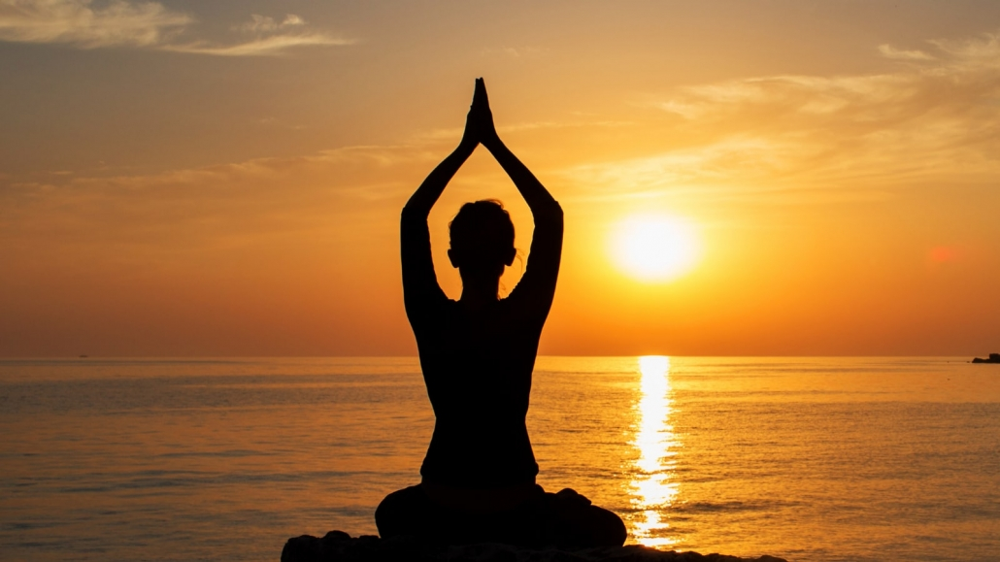
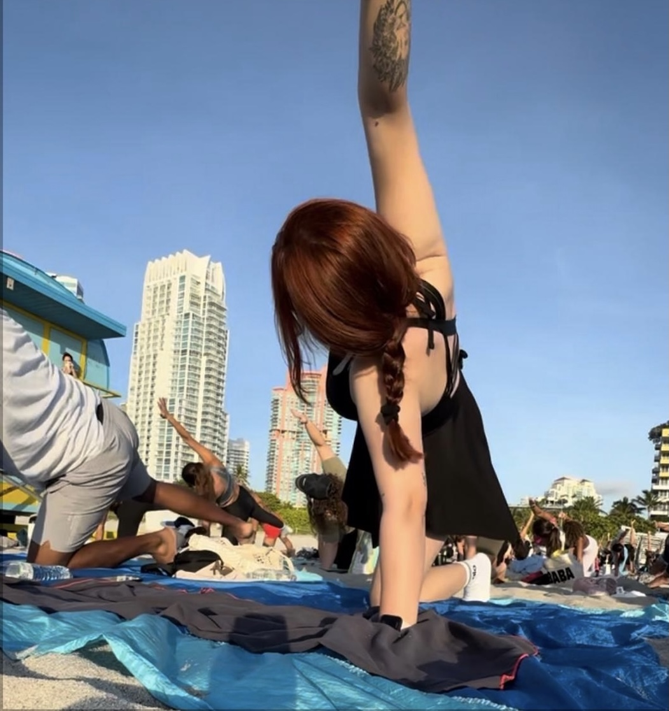

Common Styles of Practice

As I continued my yoga journey, I realized that yoga is not just one single practice. There are many different styles, and each one creates a completely different experience for the mind and body. Some classes feel calm and peaceful, while others are more energetic and physically challenging. Exploring different yoga styles helped me understand what made me feel balanced, relaxed, and connected to myself.
- Hatha Yoga: One of the first styles I tried was Hatha Yoga. Hatha is known for being slow-paced and beginner friendly, making it a great introduction to yoga. The classes focus on learning basic poses, breathing techniques, and proper posture. I enjoyed how calming and grounding Hatha Yoga felt, especially when I wanted to slow down and relax after a stressful day..
- Vinyasa Yoga: I also discovered Vinyasa Yoga, which became one of my favorite styles because of its smooth and flowing movements. In Vinyasa, each movement is connected to the breath, creating a natural rhythm throughout the class. I loved how energetic and refreshing it felt, almost like a moving meditation. Practicing Vinyasa during sunrise on the beach in Miami made me feel peaceful, focused, and full of positive energy for the rest of the day.
- Yin Yoga: Another style that really helped me mentally and physically was Yin Yoga. Unlike faster-paced classes, Yin Yoga focuses on holding poses for longer periods of time to gently stretch the body and release tension. At first it felt challenging to stay still for so long, but over time I learned how relaxing and healing it could be. Yin Yoga taught me patience and helped me feel more connected to both my body and my thoughts.

Through my experience, I learned that choosing the right yoga style is very personal. Everyone has different goals, energy levels, and comfort zones. Some people may enjoy calm and meditative classes, while others may prefer fast-moving and active sessions. That is why I believe the best way to begin yoga is simply to explore different styles and discover what feels right for you. Yoga is not about being perfect — it is about finding balance, peace, and a practice that makes you feel your best.